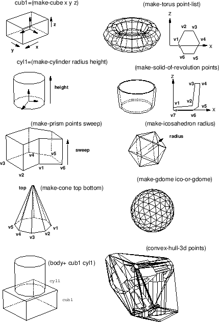
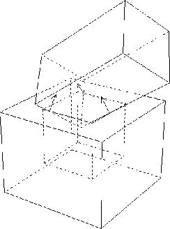

Xobject [class]
:super geometry:viewsurface
:slots
-
- The common super class for all the Xwindow related classes.
Currently, no slots variables and methods are defined.
Xdrawable [class]
:super Xobject
:slots (drawable ; drawable ID
gcon ; this drawable's default graphic context object
bg-color ; background color
width height ; horizontal and vertical dimensions in dots
-
- Xdrawable defines rectangular regions where graphics objects such as
lines and strings can be drawn.
Xdrawable is an abstract class to define
common methods for xwindow and xpixmap,
and instantiation of this class has no effect.
:init id [method]
-
-
Id is set to the drawable slot as the ID of this drawable.
A new GC (graphic context) is created and set to gcon as
the default GC of this drawable object.
:drawable [method]
-
- returns drawable id.
:flush [method]
-
- flushes commands retained in the Xlib's buffer.
:geometry [method]
-
-
returns the list of seven geometric attributes,
root-window-id, x-position, y-position,
width, height, border-width and visual's depth.
:height [method]
-
-
returns the height (dots in y direction) of this drawable.
:width [method]
-
-
returns width (dots in x direction) of this drawable.
:gc &rest newgc [method]
-
-
If no newgc is given, the current gc object is returned.
If newgc is an instance of gcontext,
it is set to the gc of this drawable.
Otherwise, newgc is regarded as a message and sent to
the current gc.
:pos [method]
-
- returns an integer vector representing
the position of this drawable.
The position is always defined relative to the
parent window, and windows created as direct subwindows of the root
window under the intervention of the window manager return the constant
coordinates in their surrounding title window regardless to their
true position in the root.
:x [method]
-
- returns the x coordinate of this drawable relatively to
the parent window.
:y [method]
-
- returns the y coordinate of this drawable relatively to
the parent window.
:copy-from drw [method]
-
-
Drw is another drawable object (xwindow or pixmap).
The contents of drw is copied to this drawable.
Figure 16:
drawing primitives
|  |
:point x y &optional (gc gccon) [method]
-
-
draws a point at
 with optional gc.
with optional gc.
:line x1 y1 x2 y2 &optional (gc gcon) [method]
-
-
draw a line from (x1, y1) to (x2, y2)
with optional gc. x1, y1, x2, andy2 must be integers.
:rectangle x y width height &optional (gc gcon) [method]
-
-
draws a rectangle whose center is located at (x, y)
and size is specified by width and height.
:arc x y width height angle1 angle2 &optional (gc gcon) [method]
-
-
draws an elliptic arc whose center is (x, y) and starting angle at
angle1 and ending angle at angle2.
Angles should be given by radian.
:fill-rectangle x y width height &optional (gc gcon) [method]
-
-
fills in a rectangular region.
:fill-arc x y width height angle1 angle2 &optional (gc gcon) [method]
-
-
fills in an arc.
:string x y str &optional (gc gcon) [method]
-
-
displays the string str starting at (x, y). The background is
not filled.
:image-string x y str &optional (gc gcon) [method]
-
-
displays an imagestring of str. Imagestring fills background.
:getimage &key x y width height (mask #ffffffff) (format 2) [method]
-
-
gets ximage from the server and returns the pixel data in a string.
The pixel data sent from the server is once stored in Xlib's ximage structure,
then copied to the string row by row.
The ximage structure is automatically destroyed.
The image string obtained by :getimage can be used to make
a pixel-image, which can be written to a file in the pbm formats
as described in section 18.6.
:putimage image &key src-x src-y dst-x dst-y width height ((:gc g) gc) [method]
-
-
puts image to the specified location in this drawable.
image is a string or a address pointing to an ximage structure.
:draw-line from to [method]
-
-
is same as :line method,
and provided for the compatibility with other viewsurface classes.
:line-width &optional dots [method]
-
- sets line-width of this drawable's
default GC. Use of the :gc :line-width message is recommended.
:line-style &optional dash [method]
-
- sets line-style of this drawable's
default GC. Use of the :gc :line-style is preferable.
:color &optional c [method]
-
- sets color of this drawable.
:clear [method]
-
-
clears full screen. this method calls :clear-area
:clear-area &key :x :y :width :height :gc [method]
-
-
clears a rectangle using the :fill-rectangle method.
Xpixmap [class]
:super Xdrawable
:slots
-
- Pixmap is a drawable that is often used
as a picture buffer or a background pattern.
Unlike xwindow, pixmap itself is not visible until it is copied to xwindow
or pixmap does not generate any event.
:init id [method]
-
- initializes this pixmap.
:create &key (width 500) (height 500) (depth 1) (gc *defaultgc*) [method]
-
-
creates a width x height pixmap with gc as its
default GC.
:create-from-bitmap-file fname [method]
-
-
creates a pixmap from a bitmap file.
:write-to-bitmap-file fname [method]
-
-
writes the contents of this pixmap into a bitmap file,
which can be read back to create a pixmap by :create-from-bitmap-file
method.
:destroy [method]
-
-
destroys this pixmap and frees X resources.
Xwindow [class]
:super Xdrawable
:slots (parent subwindows backing-pixmap event-forward)
-
- Xwindow defines visible rectangular regions of the screen.
It is inherited not only by text-window and canvas where
any graphics objects can be drawn, but also by many panel-items
and scroll-bars, which look like graphics objects rather than windows.

-
- creates and initializes a xwindow.
When parent is given, this window is created as a subwindow
of parent, and is registered in the subwindows list of
the parent.
X, y, size, width, height and border-width determine
the location and the dimensions of this window.
Save-under and backing-store control the Xserver's behaviors
taken upon when the window is re-mapped. Save-under is either
T or NIL, while backing-store is either :notUseful, :WhenMapped,
or :Always.
When backing-pixmap is T, a pixmap of the same size as this window
is created by EusLisp, and maintained as a backing-store in case
the Xserver does not have the capability of backing-store.
Border and background specify the border_pixel
and background_pixel attributes, respectively.
Map should be set NIL, if this window should not appear
immediately after its creation, as is the case many small windows
are created as panel-buttons in a panel.
Title is the window title which appears in the title bar of
the window.
Name is the name of the window stored in the property-list
of this xwindow object and printed by the printer.
X's events reported to this window are determined by
Event-mask, that is, either an integer representing a bit-coded event-mask
or a list of the following symbols:
:key, :button, :enterLeave, :motion and :configure.
If more precise control is needed, the following symbols for each event
can be specified: :keyPress, :keyRelease, :ButtonPress, :ButtonRelease,
:EnterWindow, :LeaveWindow, :PointerMotion, :PointerMotionHint,
:ButtonMotion, :KeyMapState, :Exposure, :VisibilityChange, :StructureNotify,
:ResezeRedirect, :SubstructureNotify, :SubstructureRedirect,
:FocusChange, :PropertyChange, :ColormapChange and :OwnerGrabButton.
:Key enables both :keyPress and :KeyRelease, and
:button enables both :ButtonPress and :ButtonRelease.
When an event is sent from the server, window-main-loop analyzes
the event structure and send the :KeyPress, :KeyRelease, :buttonPress,
:ButtonRelease, :EnterNotify, :LeaveNotify, :MotionNotify, :ConfigureNotify
message to the window where the event occurred.
:map [method]
-
- makes this xwindow and all the subwindows visible.
:unmap [method]
-
- makes this xwindow and all the subwindows invisible.
:selectinput event-mask [method]
-
-
Event-mask is either an integer or a list of eventmask symbols.
Each event corresponding to the bit turned-on or
enumerated in the event-mask list
becomes to be reported to this window.
:destroy [method]
-
- destroys this xwindow and frees X resource.
The corresponding entries in *xwindows* and *xwindow-hash-tab*
are also deleted so that this window object could be garbage-collected.
All subwindows are also deleted by sending :destroy.
This window is dissociated from the subwindow list of the parent window.
The drawable ID is set to NIL.
:parent [method]
-
- returns the parent window object.
:subwindows [method]
-
-
returns the list of all the subwindows.
The subwindow most recently created comes first in the list.
Only the direct subwindows of this window are listed and
subwindows of the subwindows are not.
:associate child [method]
-
- register the child window
as a subwindow of this window.
:dissociate child [method]
-
- removes the child window
of the subwindows list.
:title title [method]
-
-
changes the title of this window.
Though the title is in the Xserver, it is maintained and displayed by
the window manager.
:attributes [method]
-
- returns an integer-vector representing
the attributes of this window.
:visual [method]
-
- returns the visual resource id for this window.
:screen [method]
-
- returns the screen resource id for this window.
:root [method]
-
- returns the root window id.
:location [method]
-
-
returns a two dimensional integer-vector describing the x and y coordinates
of this window.
:depth [method]
-
- returns the depth (number of color planes) of this window.
:size [method]
-
- returns the size (width and height) of this window.
:colormap [method]
-
- returns colormap resource id for this window.
:move newx newy [method]
-
-
changes the location of this window to (newx, newy).
The coordinates are given relative to the parent window.
:resize width height [method]
-
-
changes the size of this window.
Probably because the size parameters are cached in the Xlib on the client side,
:geometry message immediately after :resize may return wrong (old)
result.
:raise [method]
-
- brings this window upfront.
:lower [method]
-
- pushes this window to the back.
:background pixel [method]
-
- changes the background pixel value (the
index in the color map) to pixel.
The pixel value is also stored in the bg-color slot.
:Clear operation is performed to fill the current background
with the specified pixel.
:background-pixmap pixmap [method]
-
-
changes the background with given pixmap.
:border pixel [method]
-
- sets the color of the border to pixel.
:set-colormap cmap [method]
-
- sets colormap.
:clear [method]
-
- clears the entire xwindow.
:clear-area &key :x :y :width :height [method]
-
-
clears the specified rectangular area of this xwindow.
make-xwindow &rest args [function]
-
- makes x-window.
init-xwindow &optional (display (getenv "DISPLAY")) [function]
-
-
is the first function to call when eusx start up.
Init-xwindow connects to the Xserver specified by display,
and initializes default variables described in the section 20.1.
Init-xwindow also loads default fonts and sets them to
global variables, such as font-courb12, lucidasans-bold-12, etc.
This font loading causes the delay at the start-up time.
Reduction of the number of fonts loaded or specifying the exact
font-names without using the wild-card character "*" will shorten the delay.
2016-03-23